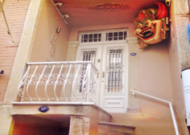
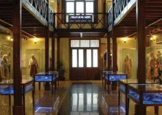

Izmir'deki Müzelerin Listesi
- Izmir Maske Müzesi - Konak Belediyesi tarafından düzenlenen, İzmir’deki butik müzelerden biri olan Mask Müzesi zemin dışında iki kattan oluşmaktadır. Zemin katta kafeterya ve dinlenme bölümü; 1. katta etnik mask bölümü; 2. katta ise Anadolu seçkisi, iz bırakanlar, sergi salonu ve atölye yer almaktadır.
İzmir Mask Müzesi’nde, Türk edebiyatının ünlü ustası Aziz Nesin’in ölüm maskı yer almaktadır.

- Güzel Sanatlar Müzesi - İlk Arkeoloji Müzesi 1924 yılında Basmane’de bulunan Ayavukla Kilisesi’nde kurulmuş, 1984 yılında Konak’ta Bahri Baba Parkı içindeki yeni binasında hizmete girmiştir. Uzak ve yakın tarihin zengin eserlerine ev sahipliği yapan İzmir Arkeoloji Müzesi, ziyaretçilerini Ege tarihi ve sanatına dair zevkli ve büyüleyici bir yolculuğa çıkarmaktadır. Batı Anadolu’daki ilk müzelerden biri olan İzmir Arkeoloji Müzesi, bünyesinde barındırdığı eserleriyle bölgesel bir müze olma özelliğini taşımaktadır.
- Sirkehane Ege Etnografya Müzesi - Günümüze Sirkehane adıyla ulaşmış olan binanın 19. Yüzyıl sonları ile 20. Yüzyıl başları arasında bir Rum ailesi tarafından yaptırılmış olduğu tahmin edilmektedir. 2010 yılında tamamlanan restorasyon sonunda Ege Üniversitesi Balkanlar ve Anadolu Giysileri Müzesi olarak düzenlenmiştir. Müze Türkiye’de bir üniversite bünyesinde Kültür Bakanlığı ile ortaklaşa açılan ilk kurum müzesi olma özelliğini taşımaktadır. Müze iki ayrı binadan oluşmaktadır.
